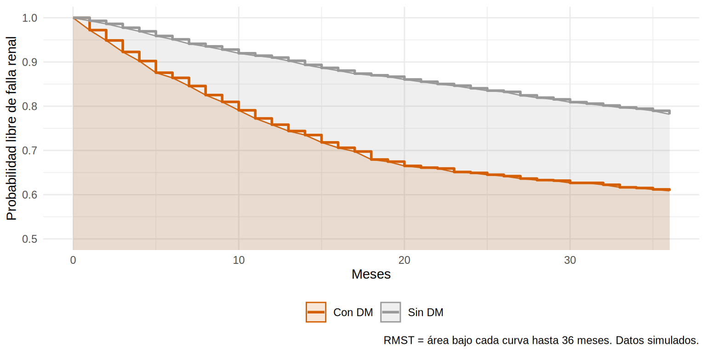

library(tidyverse)
library(survival)
library(sandwich)
library(lmtest)
source("R/simular_cohorte_pronostico.R")
theme_set(theme_minimal(base_size = 12))
coh <- read_csv("Bases/cohorte_pronostico.csv") |>
mutate(sexo = factor(sexo, levels = c("Mujer", "Hombre")),
dm = factor(dm, levels = 0:1, labels = c("Sin DM", "Con DM")),
krt = as.integer(estado == 1))Supervivencia media restringida (RMST)
Nota🩺 Escenario
Una paciente de 58 años con diabetes y ERC G4 te pregunta qué cambia, en la práctica, tener diabetes: “¿Cuánto tiempo más me libraré de la diálisis si controlo esto?”. Decirle que “el HR es 1.8” no le sirve de nada, y además sabes por 9.4 que ese HR cambia con el tiempo. Necesitas una medida que se pueda explicar en meses y que no dependa de la proporcionalidad: la supervivencia media restringida (RMST).
Lo que vamos a hacer
- Entender el RMST como un área bajo la curva, calculándolo a mano con 10 pacientes.
- Estimar la diferencia de RMST entre pacientes con y sin diabetes y comprobarla contra la verdad.
- Ajustar por covariables con pseudovalores.
Paso 1: por qué el HR no basta
El HR resume el efecto en un número, pero es difícil de explicar a un paciente (“el riesgo instantáneo se multiplica por 1.8”), solo tiene sentido si los riesgos son proporcionales (9.4) y no dice cuánto tiempo se gana o se pierde.
La supervivencia media restringida (restricted mean survival time, RMST) es el área bajo la curva de supervivencia hasta un tiempo \(\tau\): el tiempo promedio que un paciente pasa libre del evento durante los primeros \(\tau\) meses.
\[ \text{RMST}(\tau) = \int_0^{\tau} S(t)\,dt \]
Un paciente que no tiene el evento en \(\tau = 36\) meses “aporta” 36 meses; uno que lo tiene al mes 10 aporta 10. El RMST es el promedio de esos aportes. La diferencia de RMST entre dos grupos se lee como los meses de vida libre del evento ganados (o perdidos) en \(\tau\) meses.
Paso 2: el área bajo la curva, a mano
Con los 10 pacientes hipotéticos de 9.1, la curva de Kaplan-Meier es una escalera (en 9.2: 1.00 hasta el mes 2, 0.90 hasta el 5, 0.675 hasta el 8 y 0.54 hasta el 12). El área hasta \(\tau = 12\) es la suma de rectángulos:
mini <- tibble(tiempo = c(2, 3, 5, 5, 7, 8, 10, 12, 12, 15),
evento = c(1, 0, 1, 1, 0, 1, 0, 1, 0, 0))
# Rectángulos: (ancho del tramo) x (supervivencia durante el tramo)
rectangulos <- tibble(desde = c(0, 2, 5, 8), hasta = c(2, 5, 8, 12), S = c(1, 0.9, 0.675, 0.54)) |>
mutate(area = (hasta - desde) * S)
rectangulos# A tibble: 4 × 4
desde hasta S area
<dbl> <dbl> <dbl> <dbl>
1 0 2 1 2
2 2 5 0.9 2.7
3 5 8 0.675 2.03
4 8 12 0.54 2.16sum(rectangulos$area)[1] 8.885rmean
8.885 Los dos cálculos coinciden: en promedio, estos 10 pacientes pasan 8.89 de los primeros 12 meses libres de falla renal. Ahora hagámoslo con la cohorte.
Paso 3: RMST en la cohorte, con y sin diabetes
summary(survfit, rmean = tau) entrega el RMST y su error estándar. Elegimos \(\tau\) = 36 meses (3 años):
records events rmean se(rmean)
dm=Sin DM 1746 380 31.73772 0.2307919
dm=Con DM 1254 459 26.43610 0.3830952Los pacientes sin diabetes pasan, en promedio, 31.7 de los primeros 36 meses sin falla renal; los con diabetes, 26.4. La diferencia y su IC:
diferencia_meses ic_inf ic_sup
-5.301624 -6.178221 -4.425026 La diabetes resta 5.3 meses (IC 4.4 a 6.2) de tiempo libre de falla renal en los primeros 3 años. Se entiende al instante y no depende de que los riesgos sean proporcionales. Gráficamente es la diferencia de áreas entre las dos curvas:
curvas <- tibble(
tiempo = fit$time, dm = rep(c("Sin DM", "Con DM"), fit$strata), S = fit$surv
) |>
group_by(dm) |>
group_modify(\(d, k) bind_rows(tibble(tiempo = 0, S = 1), d |> select(tiempo, S))) |>
ungroup() |>
filter(tiempo <= tau)
ggplot(curvas, aes(tiempo, S, color = dm, fill = dm)) +
geom_area(position = "identity", alpha = 0.15, stat = "identity") +
geom_step(linewidth = 1) +
scale_color_manual(values = c(`Sin DM` = "#999999", `Con DM` = "#D55E00"), name = NULL) +
scale_fill_manual(values = c(`Sin DM` = "#999999", `Con DM` = "#D55E00"), name = NULL) +
coord_cartesian(ylim = c(0.5, 1)) +
labs(x = "Meses", y = "Probabilidad libre de falla renal",
caption = "RMST = área bajo cada curva hasta 36 meses. Datos simulados.") +
theme(legend.position = "bottom")
Contra la verdad
Como la cohorte es simulada, calculamos el RMST “verdadero” en una población grande sin censura (60 000 pacientes, mismo criterio de evento):
v <- simular_cohorte_pronostico(60000, semilla = 99, censura = FALSE) |>
mutate(dm = factor(dm, levels = 0:1, labels = c("Sin DM", "Con DM")))
tab_v <- summary(survfit(Surv(tiempo_meses, estado == 1) ~ dm, data = v), rmean = tau)$table
tibble(grupo = c("Sin DM", "Con DM", "Diferencia"),
estimado = c(est, dif),
verdad = c(tab_v[, "rmean"], tab_v[2, "rmean"] - tab_v[1, "rmean"])) |>
mutate(across(where(is.numeric), \(x) round(x, 2)))# A tibble: 3 × 3
grupo estimado verdad
<chr> <dbl> <dbl>
1 Sin DM 31.7 31.7
2 Con DM 26.4 26.7
3 Diferencia -5.3 -5 La estimación de la cohorte (con censura y solo 3 000 pacientes) está muy cerca de la verdad: el RMST recupera el efecto aunque los riesgos no sean proporcionales, porque no usa ese supuesto.
Paso 4: ¿qué \(\tau\) elegir?
- Fíjalo antes de ver los datos, por relevancia clínica (3 años, 5 años).
- No debe pasar del último tiempo con suficientes pacientes en riesgo (en esta cohorte, hay menos de 40 en riesgo después de los 55 meses).
- Reporta varios \(\tau\) como análisis de sensibilidad:
# A tibble: 4 × 4
tau rmst_sin_dm rmst_con_dm diferencia
<dbl> <dbl> <dbl> <dbl>
1 12 11.5 10.5 -0.95
2 24 22.0 18.9 -3.09
3 36 31.7 26.4 -5.3
4 48 40.9 33.6 -7.33La pérdida crece con \(\tau\) (de 0.9 mes a 12 meses a 7.3 meses a 48 meses), porque la diferencia entre curvas se establece en los primeros 18 meses y luego se mantiene: el área entre las curvas sigue acumulándose mientras haya distancia entre ellas.
Paso 5: RMST ajustado por covariables (pseudovalores)
Para ajustar por confusores sin suponer proporcionalidad, el método de pseudovalores (Andersen) calcula para cada paciente un valor que representa su contribución al RMST y luego lo modela con una regresión lineal:
\[ \hat\theta_i = n\,\hat\theta - (n-1)\,\hat\theta_{(-i)} \]
donde \(\hat\theta\) es el RMST de toda la cohorte y \(\hat\theta_{(-i)}\) el RMST sin el paciente i. La idea intuitiva: si quitar al paciente \(i\) baja el RMST, ese paciente “aportaba” mucho tiempo libre de evento, y su pseudovalor es alto. Los coeficientes de la regresión son diferencias de meses libres de evento, ajustadas.
rmst_uno <- function(t, e, tau) {
unname(summary(survfit(Surv(t, e) ~ 1), rmean = tau)$table["rmean"])
}
n <- nrow(coh)
theta <- rmst_uno(coh$tiempo_meses, coh$krt, tau)
theta_i <- vapply(seq_len(n), \(i) rmst_uno(coh$tiempo_meses[-i], coh$krt[-i], tau), numeric(1))
coh$pseudo <- n * theta - (n - 1) * theta_i
m_ps <- lm(pseudo ~ dm + I((27 - tfg) / 10) + log2(uacr) + I(edad / 10) + sexo +
albumina + fosforo + bicarbonato + ecv, data = coh)
res <- coeftest(m_ps, vcov = vcovHC(m_ps, type = "HC3"))
tab_ps <- tibble(termino = rownames(res), diferencia_meses = res[, 1], ee = res[, 2],
ic_inf = res[, 1] - 1.96 * res[, 2], ic_sup = res[, 1] + 1.96 * res[, 2]) |>
filter(termino != "(Intercept)")
tab_ps |> mutate(across(where(is.numeric), \(x) round(x, 2)))# A tibble: 9 × 5
termino diferencia_meses ee ic_inf ic_sup
<chr> <dbl> <dbl> <dbl> <dbl>
1 dmCon DM -3.75 0.41 -4.56 -2.93
2 I((27 - tfg)/10) -4.42 0.27 -4.94 -3.9
3 log2(uacr) -1.45 0.1 -1.65 -1.26
4 I(edad/10) 1.09 0.16 0.77 1.41
5 sexoHombre -0.47 0.37 -1.19 0.26
6 albumina 1.12 0.46 0.21 2.03
7 fosforo -1.25 0.31 -1.85 -0.65
8 bicarbonato 0.2 0.06 0.08 0.32
9 ecv -0.7 0.44 -1.56 0.16Cómo leer la tabla (cada fila, en meses de tiempo libre de falla renal en los primeros 36 meses):
-
dmCon DM= -3.7: ajustada por las demás variables, la diabetes se asocia con ~3.7 meses menos libres de falla renal (frente a -5.3 sin ajustar: parte de la diferencia cruda se debía a que los pacientes con diabetes tienen más albuminuria y menos albúmina sérica). - Un paciente con 10 unidades menos de TFGe pierde ~4.4 meses.
- Los errores estándar deben ser robustos (
vcovHC), porque los pseudovalores no son independientes entre sí.
Paso 6: cuándo preferir el RMST
| Situación | Mejor medida |
|---|---|
| Riesgos proporcionales claros | HR (Cox), complementado con riesgos a tiempo fijo |
| Riesgos no proporcionales (curvas que convergen o se cruzan) | RMST o riesgos a tiempo fijo |
| Comunicar a pacientes y decisores | RMST (“X meses más libres de diálisis”) |
| Evento muy raro o seguimiento corto | RMST con \(\tau\) pequeño, o diferencia de riesgos |
| Riesgos competitivos | RMST del tiempo libre del compuesto, o tiempo perdido por causa (RMLT) |
Advertencia⚠️ Limitaciones del RMST
- Depende de \(\tau\) (por eso se fija antes de ver los datos).
- Una diferencia pequeña de RMST puede ocultar un efecto concentrado en un periodo.
- Es una medida de asociación: para un efecto causal necesitas el mismo control de confusión que con cualquier otro estimador (Caps. 3 y 12).
Importante🎯 En resumen
- RMST(τ) = tiempo promedio libre del evento en los primeros τ meses = área bajo la curva; la diferencia = meses ganados o perdidos.
- No requiere riesgos proporcionales; se explica a clínicos y pacientes.
- Fija τ antes de ver los datos, dentro de la zona con suficientes pacientes en riesgo, y haz análisis de sensibilidad.
- El ajuste por covariables se logra con pseudovalores + regresión lineal con errores robustos.
- Complementa (no reemplaza) al HR y a los riesgos acumulados.
Ejercicio
- Calcula la diferencia de RMST a 24 meses entre pacientes con TFGe < 20 y ≥ 20.
- Compara el HR de Cox (9.3) con la diferencia de RMST para la albuminuria A3 vs. A1. ¿Cuál se explica mejor a un paciente?
- Repite el modelo de pseudovalores a τ = 24 meses. ¿Cambian los coeficientes?
Nota editorial
- Capítulo redactado con asistencia de IA y revisado por el autor. Todos los datos son simulados.